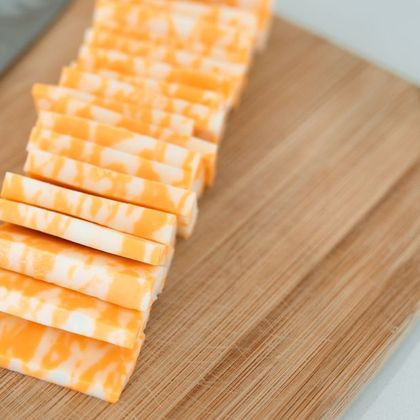

Loaded
Different
Stacking…
LOADED FRESH
BOLD FLAVOR
Smashed hot on the flat top, our prime patties lock in ultimate juiciness under a caramelized crust.
Loaded different — bold, unexpected toppings on every single burger we build.
STACK
TOP LOADED
Juicy
Cheesy
Loaded
Different
STACK smashes prime beef hot on the flat top, then builds it up with toppings you won't find anywhere else. Fresh, fully loaded, and never basic.
ORDER NOW


Food
That
Feels
Good
450 KCAL
HIGH PROTEIN
FRESH INGREDIENTS
HIGH PROTEIN
FRESH INGREDIENTS

100% REAL BEEF
ZERO SHORTCUTS
TRUE FLAVOR
ZERO SHORTCUTS
TRUE FLAVOR




Every Layer
Packed With
Signature
Flavor
TAKE AWAY
Quality That Travels With You
Freshly smashed burgers, ready to go wherever you crave. From our flat-top to your table, every layer stays hot and loaded.
BERLIN"
LONDON"
SYDNEY"
TOKYO"
NYC"
PARIS"
Feel The Change
Smashed for the bold, built for the hungry. Dive into a legendary loaded experience where every crispy edge and juicy layer rules.
ORDER NOW